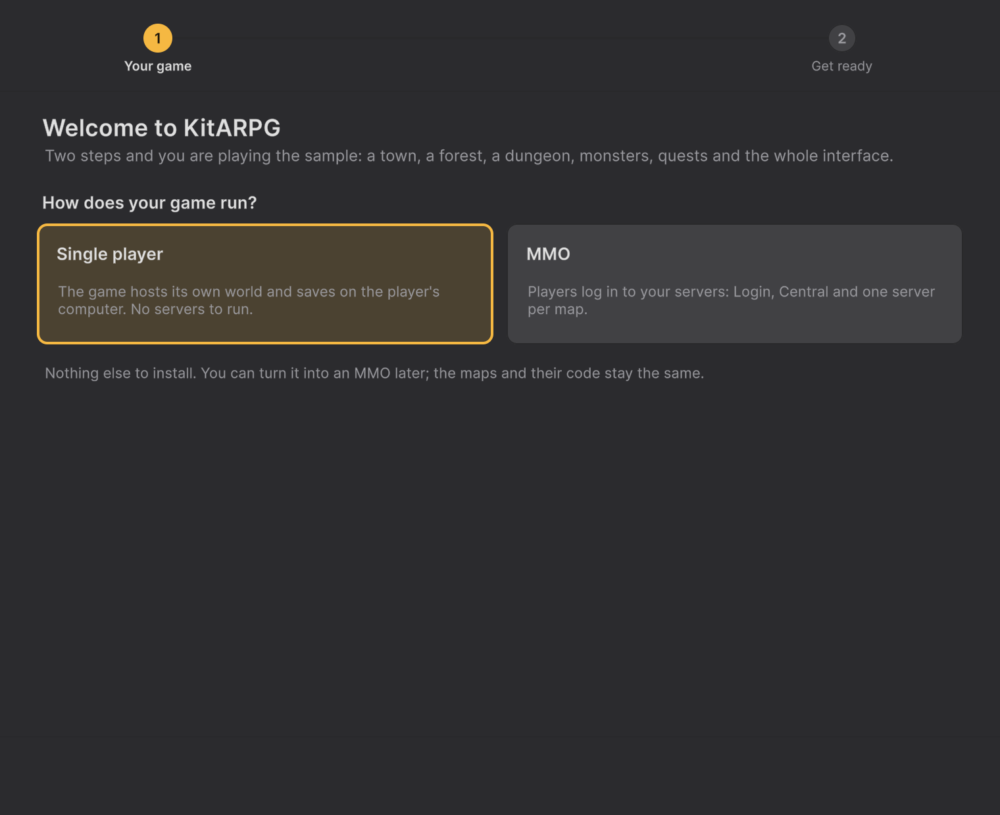

Setup Wizard
El Setup Wizard (asistente de configuración) lleva una importación recién hecha a un proyecto jugable en dos pasos: eliges cómo corre tu juego y luego presionas un botón que configura el render, las fuentes, la muestra y las escenas. Esta página explica cada paso, cada revisión que hace, qué cambia en tu proyecto y qué hacer cuando algo queda pendiente.
Dónde está
- Se abre solo la primera vez que carga el editor después de importar KitARPG.
- KitARPG > Setup Wizard lo abre en cualquier momento.
- El botón Setup wizard al pie de la barra lateral de la ventana KitARPG, y la herramienta Setup wizard > Open en Overview, también lo abren.
La ventana se titula KitARPG Setup. Arriba, una barra muestra los dos pasos, Your game y Get ready, con el actual resaltado y una marca de verificación en el terminado.
Cuándo se abre solo
El asistente se abre solo una vez por proyecto. Escribe el archivo UserSettings/KitARPG/setup-done cuando lo terminas o lo cierras, y no vuelve a abrirse solo mientras ese archivo exista.
Nunca se abre solo:
- en modo batch (builds y pruebas desde la línea de comandos);
- en el segundo editor que abre Play with two players;
- mientras el editor está entrando en Play.
Para que vuelva a abrirse solo, borra UserSettings/KitARPG/setup-done. Abrirlo desde el menú funciona exista o no el archivo.
Paso 1: Your game

El encabezado dice Welcome to KitARPG. Debajo, How does your game run? muestra dos tarjetas grandes:
| Tarjeta | Qué significa |
|---|---|
| Single player | El juego hospeda su propio mundo y guarda en la computadora del jugador. No hay servidores que correr |
| MMO | Los jugadores inician sesión en tus servidores: Login, Central y un servidor por mapa |
Haz clic en una tarjeta para elegirla. El texto bajo las tarjetas explica la elección:
- Con Single player: "Nothing else to install. You can turn it into an MMO later; the maps and their code stay the same." (No hay que instalar nada más. Puedes convertirlo en MMO después; los mapas y su código siguen iguales.)
- Con MMO: los servidores corren en tu computadora mientras haces el juego, con una base de datos local. Los levantas desde la ventana KitARPG y eliges PostgreSQL ahí cuando salgas a producción.
Tu elección se guarda en el acto en Assets/Settings/Resources/KitARPGSettings.asset (campo mode). El asset se crea si no existe. Un asset de ajustes nuevo empieza en MMO (Online).
¿No estás seguro? Elige Single player. No necesita nada fuera de Unity y puedes cambiar a MMO después en Play & Servers sin cambiar ningún contenido.
Botones de abajo:
| Botón | Qué hace |
|---|---|
| Not now | Cierra el asistente. Igual cuenta como terminado, y se abre la ventana KitARPG |
| Next | Va al paso 2 |
Paso 2: Get ready
El encabezado dice Get the project ready, con "One click sets up everything below. Nothing in your own assets is touched." (Un clic configura todo lo de abajo. No se toca nada de tus propios assets.) Una tarjeta lista cinco revisiones. Cada fila muestra una luz: hecho, por hacer, u ocupado mientras el asistente trabaja.
| Fila | Revisa que | Qué hace Set everything up |
|---|---|---|
| Graphics | El pipeline de render por defecto sea un asset de URP, cada nivel de calidad use URP (o ninguno) y el espacio de color sea Linear | Usa el asset de URP del proyecto si hay uno en Assets. Si no, crea Assets/Settings/KitARPG_URP.asset y su renderer Assets/Settings/KitARPG_URP_Renderer.asset. Lo pone como pipeline por defecto y en cada nivel de calidad que usaba otro pipeline, y pone el espacio de color en Linear |
| Fonts | Los recursos esenciales de TextMesh Pro estén en el proyecto | Importa TMP Essential Resources |
| Sample | Exista Assets/Blunnyn/KitARPG/Samples/Starter/Scenes/Title.unity |
Genera la muestra Starter (KitARPG > Starter > Build Scenes and Prefabs) |
| Scenes in the build | La primera escena activa en Build Settings sea Title |
Reemplaza la lista de Build Settings por las escenas de la muestra Starter que existan, en este orden: Title, Server, Town, Forest, Crypt |
| Scenes up to date | El EventSystem de cada escena use el módulo de UI de la entrada que tiene activada el proyecto, y ninguna escena sobrescriba Game Settings en su Game Instance | Cambia cada EventSystem a InputSystemUIInputModule o StandaloneInputModule según haga falta, y revierte los cambios sobre el Game Instance en cada escena para que tome sus ajustes del prefab |
El asistente busca un asset de URP solo dentro de Assets. El paquete de URP trae un asset propio de solo lectura que no se puede editar, así que el asistente nunca lo usa.
Correr Set everything up
- Presiona Set everything up. El botón cambia a Setting up... y las filas pasan a ocupado. Un mensaje dice "Setting up... Unity may import and compile for a moment."
- Unity importa y compila. El asistente conserva su lugar durante la recompilación.
- La importación de TextMesh Pro termina sola un momento después. El asistente la espera hasta 30 segundos.
- El asistente corre Project Check y cuenta los errores.
- El asistente se cierra. Si la muestra existe, pide guardar las escenas modificadas y abre la escena Title.
- Se abre la ventana KitARPG:
- en Overview cuando Project Check no encontró errores;
- en Project Check cuando quedan errores, para que puedas arreglarlos.
Si vuelves a abrir el asistente cuando todo está listo, el encabezado dice "Everything is in place." y el botón dice Open the sample, que abre Title y la ventana KitARPG.
Cuando quedan errores
Si Project Check encuentra errores, la tarjeta muestra una fila Project check con la cantidad ("N problem(s) left, most with a fix button.") y un botón See them. La mayoría de los problemas tienen un botón para arreglarlos en Project Check. Arréglalos y luego vuelve y presiona el botón otra vez, o sigue desde la ventana KitARPG.
Qué cambia el asistente
| Qué cambia | Dónde |
|---|---|
| Modo de juego | Assets/Settings/Resources/KitARPGSettings.asset |
| Pipeline de render | Ajustes de Graphics y cada nivel de calidad; quizás assets nuevos en Assets/Settings/ |
| Espacio de color | Player Settings > Other Settings > Color Space |
| TMP Essentials | Assets/TextMesh Pro/ |
| Muestra Starter | Assets/Blunnyn/KitARPG/Samples/Starter/ (solo si falta) |
| Lista de escenas de Build Settings | Reemplazada por las escenas de la muestra Starter |
| Escenas de la muestra Starter | Módulo de entrada del EventSystem y cambios sobre el Game Instance |
| Marca de terminado | UserSettings/KitARPG/setup-done |
Nunca cambia tus propios assets, nunca vuelve a generar una muestra existente y no toca la base de datos ni los servidores. Los servidores MMO y la base de datos se configuran después en Play & Servers.
Después del asistente
| Elegiste | Siguiente |
|---|---|
| Un jugador | Inicio rápido: un jugador |
| MMO | Inicio rápido: MMO |
Todo lo que configura el asistente se puede cambiar después: el modo en Play & Servers, las escenas en Build Settings, los ajustes de render en Project Settings.
Problemas comunes
| Problema | Solución |
|---|---|
| Fonts se queda en por hacer | La importación de TMP no terminó en 30 segundos. Vuelve a presionar Set everything up, o usa Window > TextMeshPro > Import TMP Essential Resources |
| Graphics se queda en por hacer | Un nivel de calidad todavía apunta a un pipeline que no es URP y que no puedes cambiar, o no se pudo poner el espacio de color. Revisa Project Settings > Quality y Player > Color Space |
| El asistente pide guardar escenas | Está por abrir Title. Guarda o descarta tus cambios; si cancelas, queda abierta tu escena actual |
| Los materiales siguen rosados después del asistente | Consulta Solución de problemas |
| Cerraste el asistente por error | Abre KitARPG > Setup Wizard |